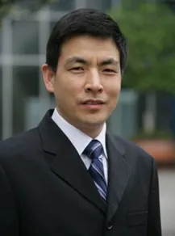

陆军军医大学大坪医院曾春雨教授课题组诚招博士后及科研助理
原文：https://mp.weixin.qq.com/s?__biz=MzAwMzIzOTk5OQ==&mid=2247503592&idx=1&sn=ac33dd3d09f5e223a812ffa419dc88ee&chksm=9b3cb7b8ac4b3eae405e88ef7b2dbed5f5ae0333be60e86d2f4e5c21773f90c7a7b4d7fb673a#rd 合集：求职/求学/招聘


一、课题组简介
曾春雨，陆军军医大学大坪医院心血管内科主任；兼任中科院重庆学院心血管病中心主任、昆明医科大学第一附属医院心血管病中心主任；长江学者特聘教授、国家杰出青年科学基金获得者 、国家重点研发计划和973项目的首席。2021年度被美国心脏学院（ACC）授予基础领域杰出科学家奖 （首位华人学者）担任教育部（老年心脑血管病）重点实验室主任 、全军急危重症救治重点实验室副主任、重庆市心血管病研究所所长、重庆市高血压研究重点实验室主任、重庆市心血管病临床研究中心主任。此外，还担任ISHR（国际心脏研究会）中国转化医学委员会前任主任委员、亚洲心脏协会基础与转化专委会主席 、中国生理学会整合生理专委会副主任委员、中华医学会心血管分会精准学组副组长、中国医师协会心血管分会代谢心血管病学组副组长、重庆市心血管病专业委员会主任委员 等。曾春雨教授长期坚持临床工作，在冠脉介入治疗方面造诣深厚，是国家心血管病众多指南、共识的制定专家。在从事临床工作的同时，开展应用基础和转化研究，尤其对于“高血压病、心肌的损伤修复和再生 ”开展系统深入的研究，取得了系列原创性学术成果，他在高血压GRK4研究成果被美国高血压学会评为2015年度最具转化前景的工作，美国NIH的STTR项目委员会将其推荐为年度具有研发前景的项目之一。他在心肌再生的研究成果被Nat Rev Cardiol述评，并被列为2017年度心脏再生领域的里程碑式 （milestone）进展之一，入选美国心脏学会2016基础科学领域最新前沿进展，被《中国循环杂志》评为2017年度中国心血管病十大科学研究。系列研究成果发表在“Sci Transl Med、Nat Commun、JCI、Circulation、Circ Res、Eur Heart J、J Hepatol、Hypertension、Kidney Int”等杂志发表SCI论文180余篇, IF>10的文章44篇，最高IF 40.0，是ESI高被引论文作者。先后获得重庆市自然科学一等奖、重庆市科技进步一等奖等5个奖项；担任美国Clin Exp Hypertens杂志（IF: 12.3）副主编、国外Hypertension等10余种国外SCI杂志编委、中华心血管病杂志、中华高血压杂志编委或副主编，美国心血管Zipes奖评审专家。获“全国科技先进工作者、重庆市青年科技创新杰出奖”等荣誉。团队为“国家自然基金委创新群体、教育部创新研究团队”，是国家心血管疾病国际联合研发中心。指导的学生2人获得“国家优青”、1人获“重庆杰青”。曾春雨教授领衔研究团队致力于建成国内著名、国际知名的人才高地，培养一批兼具临床思维与科研素养、具有冲击国家高层次人才项目能力的复合型研究人才，为广大人民群众的健康保驾护航。 二、课题组主要研究领域
（ 1）高血压发病机制；
（2）心血管损伤修复与再生；
（3）成年心肌再生；
（4）极端环境对心血管病的影响
（5）表观遗传、新材料、新技术在心血管病研究中的作用和应用
三、应聘条件、名额和工作地点
博士后：
（1）35周岁（含）以下，具有或近期将取得博士学位（医学、生物学及相关专业）；
（2）以第一作者在相关领域重要国际期刊发表过研究论文；
（3）科学态度严谨，有良好的团队合作精神，能积极协助指导实验室其他人员。
（4）博士后名额不限，长期有效。
（5）工作地点：重庆市或昆明市。
科研助理：
（1）具有硕士研究生及以上学历，博士优先，第一作者发表SCI学术论文优先；
（2）具有分子生物学、生物信息学、材料学等基础相关专业学位或研究背景（以发表研究文章为准）。
（3）首批拟招聘15人，招满为止。
（4）工作地点：重庆市或昆明市。
四、薪酬待遇
全职在站从事博士后研究的人员，享受医院职工待遇，在站两年期间，医院提供 120万元经费支持：（1）科研启动金10万元，博士后定向资助经费16万元，日常公用经费2万元/年，国家博士后科学基金奖励1000元/月；（2）工资、绩效和五险一金30万元/年，住房补贴2000元/月；（3）优秀成果奖励。第一年达到出站条件奖励5万元，第二年出站时超额完成出站条件再奖励5万元，医院优秀博士后奖励5万元；（4）留院工作者奖励10万元。科研助理系列为医院正式聘用职员，根据考核情况发放15-25万元/年，由基本工资、基础性绩效工资、各类津贴和绩效组成（包含缴纳医疗、失业、养老、生育、工伤保险及住房公积金）。
五、应聘材料
请将本人简历、研究工作经历、及其它能证明科研能力的相关文件发送到曾女士邮箱：zengliping@tmmu.edu.cn，邮件主题注明“报名博士后/科研助理+姓名”；报名者的申请材料会严格保密，初审通过者将近期安排面试。
 往期回顾
往期回顾
歪!?来"Biomamba 生信基地"兼职？************
荷兰马斯特里赫特大学Judith教授招收2023年生物信息学方向博士生求学| 寻找一个生信博导
Ulf’s Computational Biomedicine Lab 博士招聘启示
求学| 寻找一个肠道微生物或系统生物学的博导
南方科技大学第一附属医院刘利平课题组诚聘博士后中南大学湘雅医院李津臣课题组诚聘生物信息学相关多学科交叉人才福州大学医工交叉研究院徐贻佺课题组招生启事
带你们做了那么久的单细胞，也带你们找找工作
浙大医学院生物信息学 博士招生 调剂信息浙江大学招聘博士后&科研助理
加州大学洛杉矶分校招聘[staff scientists in computational biology]
毛华伟教授课题组科研博后/科研助理
赵慧英课题组科研助理招聘启事
西湖大学曾坚阳人工智能与计算生物学课题组招聘| 博士生、实习生
复旦大学马通课题组招聘|科研助理
天津医科大学蔡志刚教授课题组| 博士后招聘
求学| 寻找博导~
求学| 寻找博导. 已发表 您点的每个赞，我都认真当成了喜欢
您点的每个赞，我都认真当成了喜欢